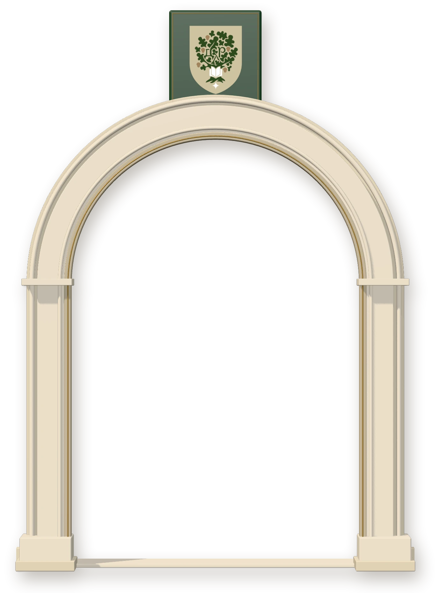

Частная гимназия · Ростов-на-Дону
Откройте
свой ДАР.
Детский сад и школа с 1 по 11 класс. Сделайте первый шаг.
Прокрутите, чтобы войти
ПропуститьЧастная гимназия · Ростов-на-Дону
У каждого
есть свой ДАР.
Детский сад с 3 лет и школа с 1 по 11 класс в Ростове-на-Дону. Полный день, небольшие классы, внимание к каждому ребёнку.

